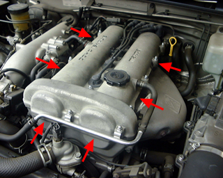
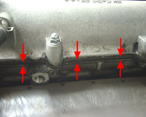
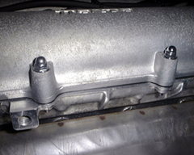

B6のシリンダ・ヘッド・パッキンはエンジンオイル漏れを起こしやすいとか。 と、いうことでチェックしてみると漏れてました.. といってもオイルが減って しまうような激しい漏れ方ではなくて、じわじわしみ出てくるような感じ。 すぐにエンジンブローを起こしてしまうような問題ではないけれど、心配なので 念のため修理。エンジンをいじるのは怖いので埼玉にある 「メカドック」に依頼。 ヘッドとクランク角センサのゴムパッキンを交換してもらって６〜７kくらいで 済みました。
 |
 |
| 修理前(ヘッドカバーの継目から漏れている) | 修理後 |


撮影条件が修理前後で違うのでわかりにくかったかもしれませんが、 修理後５００キロくらい走った時点で、オイル漏れは全く認められません。 またオイル漏れでヘッドの継目が汚れてしまっていたので、修理後、 洗浄しました。エンジンルームをきれいにしていると、不良箇所も発見 しやすいです。
ｂｙ すすたわり